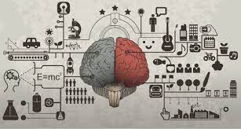

심리학에서 자주 사용하는 용어

- 가르시아 효과
- 특정한 먹거리와 미각과 뒤에 따르는 결과 사이의 관련성을 학습하는 놀랄 만한 재능
- 플라세보 효과 위약효과
- 약효가 전혀 없는 약을 먹고도 약효 때문에 병이 난 것과 같은 효과를 얻은 현상을 "가짜약 효과"라고 한다. 프로시보란. 생물학적으로는 아무런 효과가 없는 중석적인 물질이지만 그것이 효과가 있다고 믿는 사람들에게는 실제 효과가 나타는 약물이나 물질을 말한다.
- 유사효과
- 사람들은 태도와 가치관이 유사한 사람들을 더 좋아한다. 그 뿐만 아니라. 인종, 종교, 문화, 정치, 사회 계층 교육 수준 연령이 유사한 사람들을 그렇지 않은 사람들보다 더 좋앟나다. 물론 전혀 어울리지 않을 것 같은 사람이랑 친하게 지내는 경우도 있다.
- 고백효과
- 사람들은 어떤 사람들에게 도움울 못 주었다는 죄의식, 남에게 피해를 입혔다는 죄의식이 있을 때 죄의식을 덜려고 남을 도와주는 행동을 한다. 그런데 자신의 죄의식을 남에게 고백하면 그런 죄의식이 사라져 다른 사람을 돕는 행동이 줄어든다.
- 고슴도치 딜레마
- 다른 사람과 깊은 인간 과계를 맺지 않으려는 사람들도 있다. 자기의 삶과 자기 일에만 몰두해서 남 들이 보기에는 이기적이라고 할 정도로 자기 중심적이다. 늘 자기를 감추고 상대방과 일정한 거기를 두려워 한다. 그러면 피차 서로 간섭할 일도 없고 부딪칠 일도 없기 때문에 부담이 없다. 게다가 상대방으로부터 상처 받을 일도 없다. 이렇게 인간관계 초기부터 상대방과 일정한 거리를 두고 방어하려는 사람들의 심리를 일컫는 말이다.